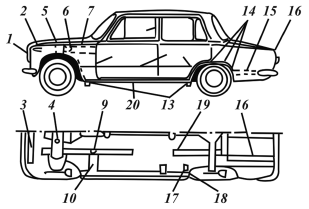

Техническое обслуживание кузова.
Техническое обслуживание кузова заключается в поддержании его в чистоте, а также уходе за лакокрасочным покрытием. Пыль с обивки подушек и сидений следует удалять пылесосом, избавиться от жирных пятен на обивке помогут специальные автоочистители. Чтобы сохранить хороший внешний вид автомобиля, необходим постоянный профилактический уход за покрытием кузова. Во избежание царапин нельзя удалять пыль и грязь сухой тканью. Автомобиль лучше мыть до высыхания грязи струей воды небольшого напора с использованием мягкой губки и автошампуня. Кузов также можно мыть струей пара (включая моторный отсек), за исключением случаев, когда днище законсервировано защитной мастикой на основе воска. Этот способ широко применяют в гаражах и станциях технического обслуживания. Он хорош тем, что позволяет удалить масляные загрязнения в отдельных труднодоступных местах.
Летом автомобиль желательно мыть в тени. Если это невозможно, то вымытые поверхности нужно сразу протирать насухо замшей, чтобы придать кузову блеск, так как при высыхании капель воды на солнце на окрашенной поверхности образуются пятна. Нанесенный слой воскового покрытия придаст лакокрасочному покрытию кузова больше блеска и защитит его от вредных химических веществ, содержащихся в воздухе. Если кузов не совсем чист, используйте специальные моющие препараты, которые одновременно придают блеск и обладают полирующим эффектом.
После мойки зимой в теплом помещении перед выездом следует протереть насухо кузов, уплотнители дверей и капота, а также продуть замки сжатым воздухом для предохранения их от замерзания. При мойке автомобиля необходимо следить, чтобы вода не попала на узлы электрооборудования в моторном отсеке, особенно на катушку зажигания и распределитель. Рекомендуется периодически осматривать и при необходимости очищать дренажные отверстия порогов и дверей, а также сточные части системы отопления и вентиляции, чтобы обеспечить быстрый сток воды.
Большой вред автомобилю могут нанести даже незначительные повреждения лакокрасочного покрытия. Пока не поздно, повреждения и сколы после соответствующей подготовки нужно закрашивать. Для выполнения этой операции автомобиль можно отдать профессиональным кузовщикам, либо, запасясь терпением, приобрести соответствующие составы, инструменты и произвести ремонт самостоятельно. Первый путь предпочтителен для тех, у кого автомобиль сильно проржавел и во многих местах краска отслоилась. Если же повреждения незначительные или точечное, с помощью современных ремонтных средств кузов можно вполне профессионально отремонтировать самостоятельно.
Для восстановления лакокрасочного покрытия с ледует подобрать краску того же оттенка, в который автомобиль окрашен (код цвета краски указан на приклеенной внутри автомобиля табличке). Однако, если это «металлик», лучше доверить покраску специалисту, потому что эмалью в аэрозольной упаковке, как правило, не возможно достичь идентичного оттенка покрытия. Затем для ремонта нужно подготовить скребок, нож или маленькую отвертку, которые будут нужны для зачистки области повреждения до металла; купить грунтовку и основную краску (эмаль), которыми вы будете закрашивать повреждение. Необходимые краски имеются не только для кузова, но для бамперов, шин и даже элементов системы выпуска.
Свежеокрашенную поверхность можно высушивать с применением нагревателей любого типа, но нельзя применять для ее ускорения вентиляторы, так как покрытие будет засорено пылью. После полного высыхания окрашенной поверхности нужно осторожно отполировать ее и нанести консервант.
Чтобы сохранить блеск окрашенных поверхностей, особенно у автомобилей, хранящихся на открытом воздухе, следует регулярно применять автополироли. Они закрывают микротрещины и поры, появившиеся в лакокрасочном покрытии, что препятствует возникновению коррозии под слоем краски. Полирование можно выполнять специальной пастой вручную или электродрелью с насадкой. Для сохранения блеска кузова не следует оставлять автомобиль долгое время на солнце, допускать попадание на поверхность кузова кислот, растворов соды, тормозной жидкости и бензина. Не следует также мыть автомобиль содовым или щелочным раствором.
Хромированные детали кузова требуют такого же ухода, как и лакокрасочное покрытие. Детали из пластмасс необходимо протирать влажной тканью или специальным автоочистителем. Чтобы пластмассовые детали не потеряли блеск, не следует применять бензин или растворители.
Стекла в автомобиле очищают мягкой льняной тканью или замшей. Грязные стекла нужно предварительно вымыть водой с добавлением специальной жидкости для мойки стекол или автоочистителем для стекол. При появлении на лобовом стекле потертостей или мелких царапин их удаляют размельченным и просеянным порошком пемзы, замешанным в воде до состояния густого раствора. Резиновые уплотнители два раза в год обрабатывают специальной краской, чтобы придать им блеск и продлить срок службы.
Для удаления со стекол льда и размораживания замков дверей рекомендуется применять авторазмораживатель в аэрозольной упаковке, внутрь замков можно вводить тормозную жидкость. Зимой в бачки для омывателей следует заливать водный раствор специальной незамерзающей жидкости или другие составы в соответствии с рекомендациями по их применению.
Как защитить кузов от коррозииКузов автомобиля имеет значительное количество скрытых полостей, щелей, в которых создаются благоприятные условия для возникновения и развития коррозии, которая является результатом плохого проветривания и скапления влаги. Коррозии подвержены также днище кузова, нижние части дверей, стоек, соединения деталей, в том числе места точечной сварки. Часто и сваренные швы не имеют достаточной герметизации и являются очагами ускоренной коррозии. Поэтому в процессе эксплуатации автомобиля требуется проверка состояния противокоррозионного покрытия, а в случае необходимости – дополнительная защита, особенно скрытых полостей, путем нанесения специальных противокоррозионных составов, а соединений деталей путем нанесением уплотнительных мастик.
Чтобы ввести противокоррозионные составы в скрытые полости предприятием-изготовителем предусматриваются технологические отверстия или проемы, через которые можно пропускать наконечники пистолетов с удлинительными шлангами. Если таких отверстий нет, в отдельных элементах кузова просверливают отверстия диаметром не более 12 мм, которые обеспечивают необходимый доступ. После введения состава отверстия закрывают резиновыми заглушками. Особое внимание при эксплуатации автомобиля необходимо обращать на целостность защитного покрытия на днище кузова, которое подвержено более интенсивным внешним воздействиям, а следовательно, и коррозии.
Для противокоррозионной обработки применяют следующие материалы:
автоконсервант «Мовиль» (разбавителем или растворителем являются уайт-спирит, бензин);
защитный смазочный материал невысыхающий НГМ-МЛ (разбавителем или растворителем является уайт-спирит);
защитное пленочное покрытие НГ-216Б (разбавителем или растворителем являются уайт-спирит или бензин);
пластизоль полихлорвиниловый Д-11А или Д-4А (разбавителем или растворителем является уйт-спирит или бензин);
мастика невысыхающая 51-Г-7 (разбавителем или растворителем являются уайт-спирит или бензин);
мастика противошумная БПМ-1 (разбавителем или растворителем являются ксиол, сольвент).
Защитный смазочный материал НГМ-МЛ берут для обработки скрытых полостей. Им обработаны полости всех новых автомобилей.
Автоконсервант «Мовиль» используется для обработки скрытых полостей в процессе эксплуатации. Допускается его нанесение на поверхности, ранее покрытые маслами, а также на ржавые поверхности. Рекомендуется обрабатывать полости через каждые два года. Недостатками автоконсерванта являются непригодность для открытых мест кузова и слабое проникновение в ржавчину.
Защитное пленочное покрытие НГ-216Б используется для покрытия узлов и частей автомобиля под кузовом на период транспортирования.
Пластизоль Д-11А применяют для защиты днища кузова от коррозии, абразивного износа, а также для шумоизоляции новых автомобилей. Толщина покры тия 1,0–1,5 мм. Мастика противошумная битумная БПМ-1 используется для защиты от коррозии днища кузова в процессе эксплуатации автомобиля. Наносят ее слоем толщиной 1,0–1,5 мм. Она хорошо снижает шум, но не обладает достаточными противокоррозионными свойствами и не может длительное время противостоять растворам солей, абразивам и другим веществам. Более качественны мастики «Tectul» и «Dinitrol», изготавливаемые на высокоолифной основе. Они не растрескиваются и не затвердевают в процессе старения, что выгодно их отличает от мастик на битумно-полимерной основе и очень важно при термодинамической и физической подвижности металла кузова.
Пластизоль Д-4А применяют для герметизации сварных швов и стыков деталей на внешних и внутренних поверхностях кузова.
Невысыхающая мастика 51-Г-7 используется для герметизации сочленений кузова, угловых стыков и зазоров.
Противокоррозионные составы необходимо наносить равномерно, они не должны содержать пор. Для того, чтобы нанести их в скрытых полостях кузова используют пистолеты типа КРУ-1 со специальным упругим трубчатым пластмассовым удлинителем, который одним концом подсоединяется к пневмопистолету с помощью накидной гайки, а на другом имеет форсунку, создающую факел распыла. За счет своей упругости удлинитель обеспечивает проникновение распыливающей форсунки в труднодоступные места кузова. Противокоррозионный состав наносится на поверхность путем воздушного или безвоздушного распыления.
Для противокоррозионной обработки внутренних полостей кузова (рис. 28) необходимо установить автомобиль на подъемник, вскрыть отверстия, закрытые пробками, снять детали и обивку, мешающие доступу в скрытые полости, промыть полости теплой водой через дренажные и технологические отверстия, пока не начнет вытекать чистая вода, а затем продуть воздухом из насоса и просушить.

Рис. 28. Места в автомобиле требующие защиты от коррозии:
1 – корпус фар изнутри; 2 – передняя панель кузова; 3 – усилитель капота; 4 – балка передней подвески; 5 – стойка «передка»; 6 – коробчатые усилители брызговиков; 7 – полости в задней части передних крыльев; 8 – передние стойки; 9 – передние лонжероны; 10 – передние боковые поперечины пола; 11 – внутренние поверхности дверей; 12 – средние стойки; 13 – кронштейны под домкратную проушину; 14 – передние нижние части задних крыльев и арки колес по стыку с крыльями; 15 – лонжероны багажника; 16 – усилители крышки багажника; 17 – кронштейны нижних и поперечно реактивных рычагов задней подвески; 18 – пороги; 19 – задние лонжероны; 20 – днище и арки колес (открыто по всей поверхности)
Покрытие кузова антикоррозионными материалами при появлении ржавчины или отслоении, разрушении старого покрытия является самым надежным средством борьбы с коррозией.
Для восстановления противокоррозионного и противошумного покрытия днища кузова и арок колес обработку необходимо производить на подъемнике или эстакаде, колеса лучше снять. Перед обработкой следует вымыть автомобиль снизу слабой струей воды из шланга, стараясь, чтобы вода не попала внутрь кузова, затем удалить оставшиеся после мойки грязь и влагу из скрытых полостей и просушить автомобиль. Барабаны и защитные диски тормозов закрывают защитными кожухами, а карданную передачу, глушитель, тросы, шланги и другие не подлежащие обработке мастикой места клейкой лентой или плотной бумагой.
Перед антикорозионной обработкой следует удалить следы ржавчины и отслоившиеся части старого покрытия. Налет ржавчины снимают абразивными шкурками или моечным составом, который наносят на место коррозии волосяной щеткой, затем обработанную поверхность обезжиривают растворителем.
Чтобы окончательно снять ржавчину, применяют специальный грунт или очиститель. После трудоемкой операции по удалению ржавчины очищенные до металла участки необходимо обязательно загрунтовать. Грунт наносят только кистью. После высыхания грунтовки на обрабатываемую поверхность можно наносить противошумную битумную мастику. Очень густую мастику следует разогреть, поставив банку с мастикой в теплую воду. Слой мастики должен быть толщиной 1–1,5 мм. Наносят ее шпателем, кистью или рукой в варежке или рукавице. С окрашенной поверхности мастику можно удалить бензином. Летом мастика сохнет более суток.